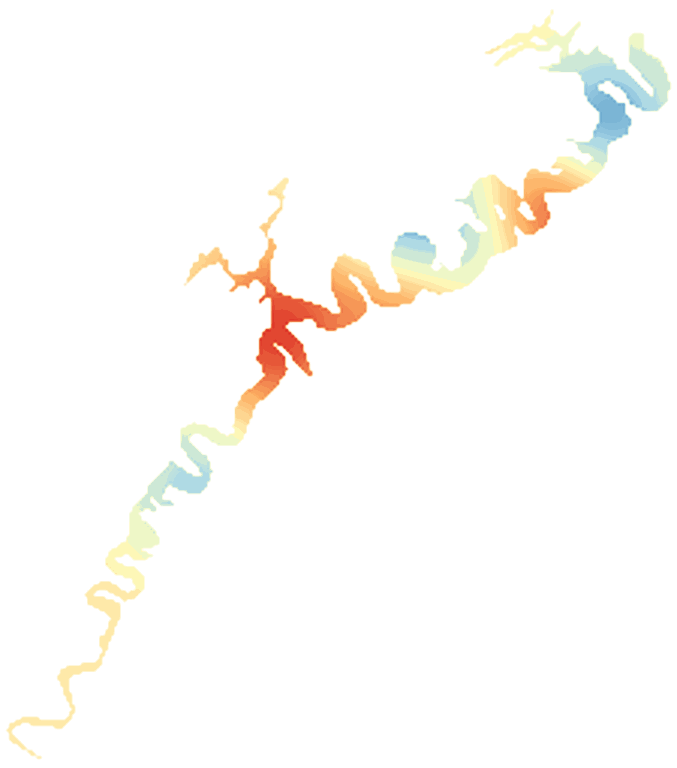

LakeScope › PA
Raystown Lake today
Updated 2026-11-14 - Atlas Labs
Clear water, 50°F water, level falling, 6 ft below normal, calm this morning.
Water level
779.35 ft
USGS gauge 01563100 - 2026-11-14
7-day trend: falling (-0.46 ft). Compared with normal for this date: -5.8 ft (same weeks, 2016-2025).
Water clarity and algae
Clear water Last clear view: a few days ago. 1 cloudy pass since.
Surface temperature
50°F
seen from space on 2026-11-11

Ice
Open - 0% ice cover
Estimate from weather and satellite, not a measurement. Check the ice yourself before going on it.
Weather, next 3 days
| Day | Sky | High / low | Wind | Rain |
|---|---|---|---|---|
| Saturday | Slight Chance Snow Showers then Chance Rain Showers | 45 / 34°F | 12 mph NW | 23% |
| Sunday | Slight Chance Snow Showers then Mostly Cloudy | 47 / 34°F | 8 mph NW | 15% |
| Monday | Mostly Sunny | 53 / 26°F | 5 mph NW | 0% |
Sunrise 06:57 - sunset 16:55 - Waxing crescent. National Weather Service.
Get the LakeScope app: alerts and the 3-D view of Raystown Lake